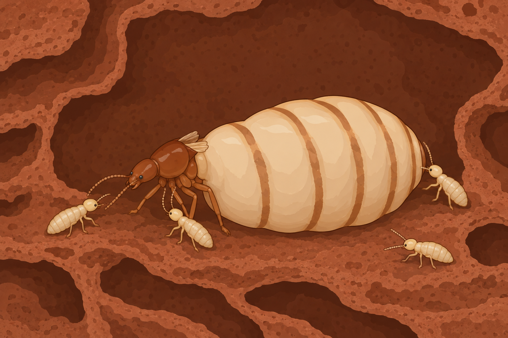
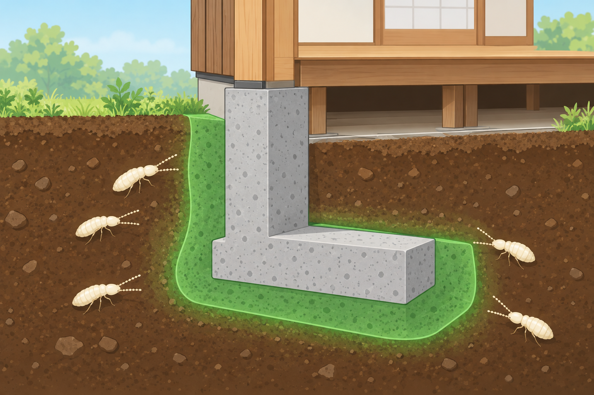
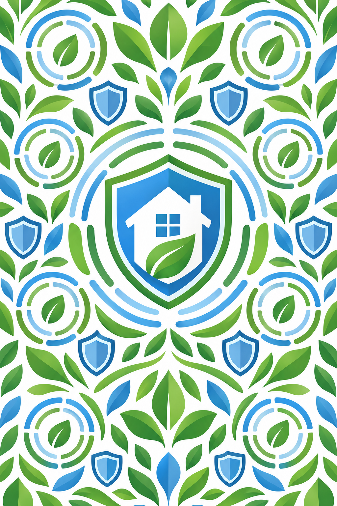

画面
陣営選択
対戦(防除)
対戦(シロアリ)
途中の盤面
結果(勝ち)
場面
ドロー2枚
CPU の手番
予知の選択
手札上限
手詰まり防止
偵察の結果
完全侵食
枯れ木が倒れる
羽アリ→女王
手番バナー
勝利
敗北
ログ
速度
×1
×0.5
シロアリボージョ
(仮)
シロアリ側と防除業者側に分かれて戦う、CPU 対戦のカードゲーム
どちらで遊びますか?

シロアリ側
勝ち方
8か所のうち5か所を完全侵食すれば勝ち。羽アリを女王アリに育てて一気に攻めよう
シロアリ側で遊ぶ

防除業者側
勝ち方
シロアリの山札が尽きるまで家を守りきれば勝ち。薬剤散布・バリア工法・ベイト工法で家を守ろう
防除業者側で遊ぶ
先攻はコイントスで決まります
UI 試作(配置・操作・演出の確認用)
CPU
CPU
考え中…
☰
ログ
完全侵食
0/5
ターン 1
シロアリ山札
50
やめる
あなた

ターン終了
勝利!
同じ陣営でもう一度
陣営を変えて遊ぶ
もどす
使う
カードを上に引き上げても使えます
ログ
とじる